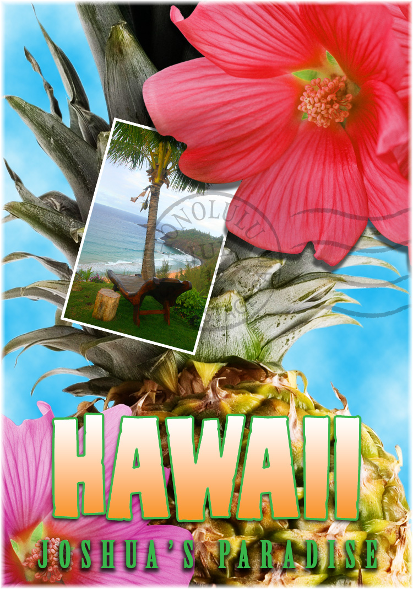

Joshua Rogers's Photoshop Experience
Layer Basics
This lesson introduced the basic use of layers and how they allow multiple images to be combined and edited individually within a single project.
We started by creating a pineapple image and applying an overlay blending mode to enhance its overall appearance. After that, we imported a beach image from another PSD file and placed it into our composition, resizing it using the Transform tool so it fit properly. To improve its appearance, we added a white stroke to give it a more defined, photo-like border. We also adjusted the opacity so the image blended in without drawing too much attention away from the rest of the design.
Next, we applied the “Clouds” filter from the Filter menu to create a cloud-like background effect. We then imported a second flower image from another PSD file and resized it so it aligned along the edge of the screen, parallel to the existing red flower.After placing the images, we added the text “Island Paradise” and applied several effects to enhance its appearance. A drop shadow was used on the main title to give it a more polished and professional look. For the word “Hawaii,” we applied a green stroke along with a yellow gradient to make the text stand out. We also adjusted the hue and saturation slightly to fine-tune the color.
Finally, we added our name to the top of the image, completing the project.
